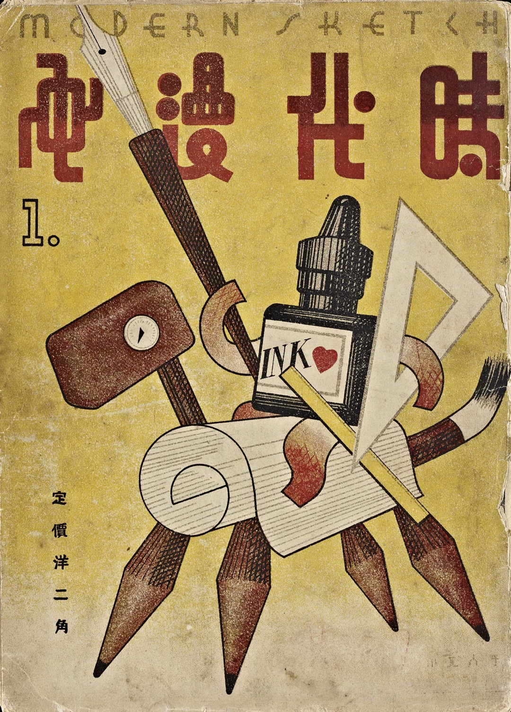
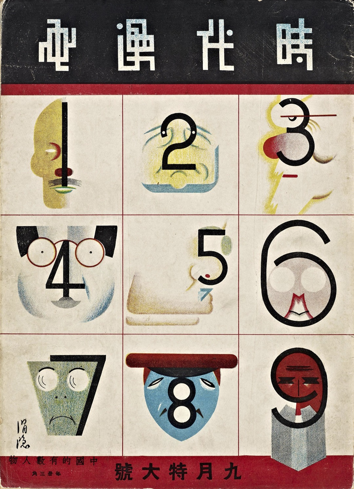
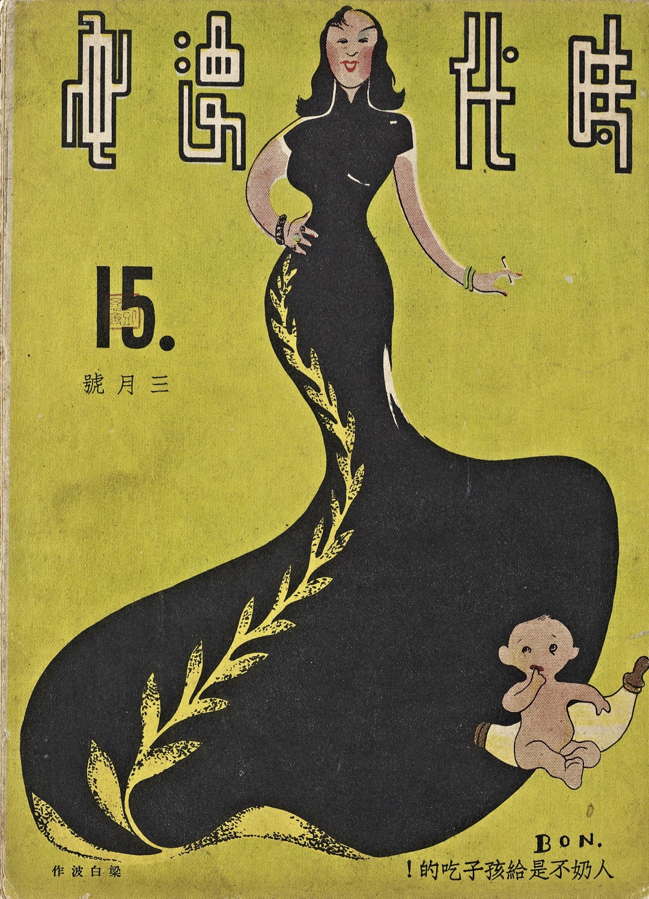

What is Shidai Manhua (時代漫畫)?
Modern Sketch was a series of cartoon magazines (Manhua漫画) published from 1934 until 1937, during the time of the Republic of China.
The whole 39 issues of the magazine were published by the Shanghai Shidai (Era) Books Company.
It was founded by cartoonists Zhang Guangyu (张光宇) and Lu Shaofei (鲁少飞).
The magazine mainly published traditional satirical cartoons,
metropolitan sketches, and comic strips.
The layout, typeface, and advertising design of the magazine can still be used as a great reference today.


